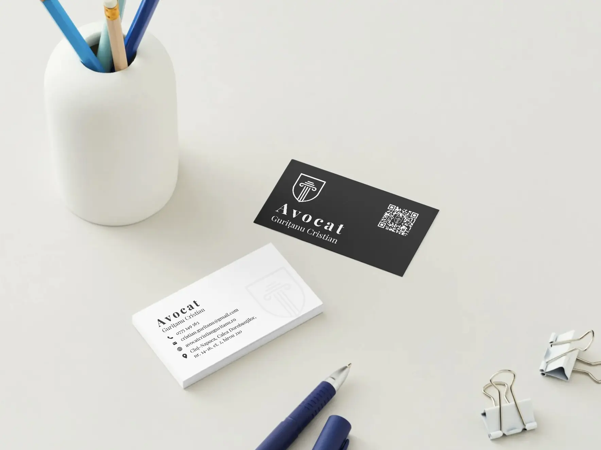

Avocat Cristian Gurițanu
Studiu de caz

Context: Cluj-Napoca este una dintre cele mai competitive piețe pentru servicii juridice din România. Clienții caută un avocat în Cluj-Napoca online, compară site-uri și profiluri, apoi cer o consultație.
Provocare: un cabinet nou pe piață trebuie să transmită rapid credibilitate și vizibilitate locală (inclusiv pe Google Maps), fără „zgomot” vizual sau mesaje neclare.
Soluție: identitate vizuală unitară, website cu blog juridic, optimizare Google Business Profile și SEO local - livrate de echipa SOLON în sub 30 de zile, cu măsurători în Analytics și Search Console.
Sari la 1. Strategie • 2. Implementare • 3. Rezultate • 4. Concluzie

Informații proiect
- Tip client: Cabinet Individual
- Locație: Cluj-Napoca
- Tip abonament: SILVER
Obiective principale
- Identitate de brand recunoscută (logo + manual)
- Vizibilitate în căutările locale (Google Business Profile / Maps)
- Website rapid, cu blog juridic administrat ușor
- Încredere la prima vizită pe site (social proof + contact clar)
Servicii implementate de  SOLON
SOLON
- Design logo
- Manual de brand
- Cărți de vizită
- Google Business Profile (fostul Google My Business)
- Design UI/UX website
- Copywriting website
- Implementare website
- Blog cu panou de control
- Servicii SEO profesionale pentru avocați
- Analytics website
- Mentenanță website
- Adresă email personalizată
- Social media - creare conturi, conținut și programare postări
- Mape personalizate - design și tipărire
- Antet personalizat - documente oficiale
1. Strategie: încredere + vizibilitate în Cluj-Napoca
Pornirea clară: tehnologia nu înlocuiește expertiza juridică, o face mai vizibilă și mai ușor de înțeles pentru clientul care caută un avocat la Cluj. Strategia nu a fost „mai multe unelte”, ci un lanț de încredere: același mesaj vizual și verbal, de la logo la profilul Google și la primul contact pe site.
Stack livrat:
- Brand & manual - reguli clare (culoare, tipografie, utilizare logo)
- Materiale fizice - cărți de vizită, mape, antet pentru documente oficiale
- Google Business Profile - semnale locale pentru „avocat aproape de mine”
- Website + blog juridic - conținut util, SEO, pagini de servicii
- SEO local + Analytics - ce funcționează, ce optimizăm în continuare
- Social media - prezență controlată, pe ton profesionist
Rezultat căutat: vizitatorul înțelege în secunde cine este avocatul, în ce poate ajuta și cum îl contactează - iar cabinetul poate actualiza blogul și materialele fără blocaje tehnice.
2. Implementare (brand, website)
Branding: logo și identitate vizuală pentru cabinet
Un cabinet de avocat se sprijină pe reputație; în online, reputația începe cu primul contact vizual (website, profil Google, materiale tipărite). Am transpus valorile cabinetului Av. Cristian Gurițanu - seriozitate, competență, abordare personalizată - într-un sistem grafic coerent, ușor de aplicat pe toate canalele.
Paletă: bleumarin profund + accente aurii calde. Tipografie: serif pentru titluri, sans-serif pentru textul curent - lizibilitate ridicată pe ecran și la print.
Manual de brand
Documentație pentru utilizare logo, culori, tipografie, variante corecte/greșite - astfel încât identitatea să rămână consistentă la orice aplicație nouă.
Cărți de vizită
Finisaj mat, ierarhie clară a informației (nume, drept, contact) - primă impresie aliniată cu poziționarea cabinetului din Cluj-Napoca.

Google Business Profile - vizibilitate locală (Maps)
Am optimizat Google Business Profile (fostul Google My Business): categorii potrivite pentru servicii juridice în Cluj-Napoca, descriere și date NAP coerente cu site-ul, fotografii, flux pentru recenzii și legături către site - semnale locale pentru căutări de tip „avocat Cluj”, „cabinet avocat Cluj-Napoca”.
Website cu blog juridic și pagina „Cazuri de succes”
Site rapid, mobil-first, ușor de întreținut: pagini pentru domenii de practică, secțiuni Despre / contact, hartă și blog cu editor simplu. Pagina de cazuri evidențiază experiența profesională și sprijină încrederea înainte de prima consultație.
Vezi cazuri de succes (site-ul cabinetului)
Servicii SEO profesionale pentru avocați - focus Cluj-Napoca
- Cuvinte-cheie pentru practică juridică + zonă (Cluj / Cluj-Napoca)
- On-page: titluri meta, descrieri, ierarhie H1–H3, texte alternative la imagini
- Tehnic: viteză, HTTPS, arhitectură clară pentru mobile
- Local SEO: coerență NAP (nume–adresă–telefon) cu Google Business Profile
- Măsurare: Google Analytics + Search Console pentru trafic și interogări
Social media pentru cabinet
Conturi configurate, ghid de ton și conținut (imagini, mesaje) adaptat mediului juridic: vizibilitate controlată, fără a dilua sobrietatea mesajului.
Mape personalizate (print)
Design aliniat manualului de brand + tipărire pentru întâlniri și evenimente - aceeași calitate vizuală ca în digital.
Antet personalizat pentru documente
Șablon de antet cu date de contact și elemente vizuale ale cabinetului, pentru corespondență și documente interne - consistență de brand la fiecare pagină trimisă.
3. Rezultate (timp, vizibilitate, livrabile)
Proiectul a fost livrat într-un orizont de timp fix; indicatorii de mai jos rezumă viteza de execuție, un semnal de creștere pe canalul local (Google Maps) și autonomia clientului pe conținut (blog).
| Indicator | Rezultat |
|---|---|
| Timp până la lansare (de la prima discuție) | 30 de zile |
| Creștere vizibilitate în Google Maps (prima lună, față de linia de bază) | +70% (metrică raportată în ecosistemul Google) |
| Identitate livrată | Logo, manual de brand, cărți de vizită, mape, antet |
| Blog / conținut | Administrare de către avocat, fără tickete de suport pentru editări curente |
*Indicatorii pot varia în timp; îi raportăm transparent în fază de audit și mentenanță.
„Colaborarea cu echipa SOLON a depășit așteptările mele. Aveam nevoie de o prezență digitală serioasă, care să reflecte profesionalismul și atenția la detalii cu care îmi practic meseria. Am primit exact asta: un logo elegant, un website modern pe care îl pot actualiza singur și o vizibilitate concretă pe Google, pe care o regăsesc deja în numărul de solicitări noi.”
4. Concluzie
Digitalizarea unui cabinet de avocat nu este un moft de „trend”: este răspunsul la faptul că clienții caută avocat online (site, recenzii, profil Google) înainte de a suna. Prima impresie se construiește în secunde - identitate, mesaj, dovadă socială.
Pentru Av. Cristian Gurițanu (Cluj-Napoca), am livrat un pachet coerent: brand, materiale tipărite, Google Business Profile, site cu blog, SEO local și social media - în termen, cu indicatori urmăriți în instrumente de analiză.
Vrei același tip de claritate pentru cabinetul tău? Programează o consultanță gratuită - analizăm împreună obiectivele și prioritățile tale.
Ocupă-te de clienți. Noi ne ocupăm de prezența ta digitală.
Alte studii de caz

Avocat Sebastian Nagy
Branding, Marketing, Website

Marinău și Asociații
Branding, Website
Vrei să te sunăm noi?
Un coleg din departamentul tehnic va iniția o discuție telefonică în viitorul apropiat.